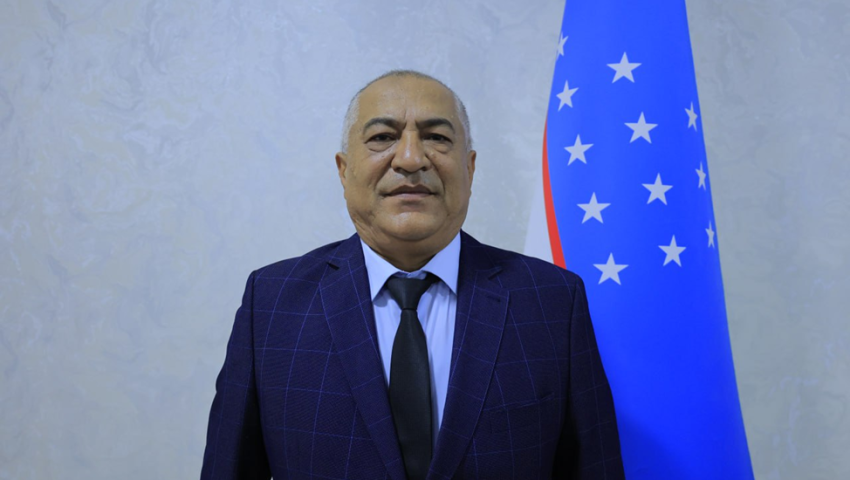

Biznes boshqaruvi fakulteti dekani
Mahmudov Baxriddin Jo‘rayevich
Qabul vaqti: Seshanba16:00 dan 18:00 gacha
Telefon: +998 91-281-00-02
Elektron pochta: mahmudovbaxriddin@gmail.com
Mehnat faoliyati
1983-1988 yy. - Toshkent politexnika instituti Namangan filiali talabasi
2024 y.-2025 yy . - Namangan muhandislik-qurilish instituti Iqtisodiyot va boshqaruv fakulteti dekani
2025 y-h.v . - Namangan davlat tenika universiteti, Biznesni boshqarish fakulteti dekani
